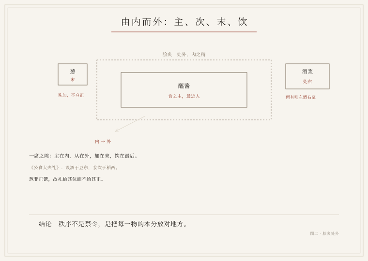

曲礼上 · 一·六十 · 第 58 课
席上的陈设由内而外分三层：最内是醯酱，其次脍炙，末了是葱。右边另设酒与浆，左酒右浆。这一节把一席之内的「主从次序」摆给人看。
说什么事：脍炙处外，醯酱处内。葱渫处末。酒浆处右。
落在哪一层：器。上节讲四位，此节讲四层。
为何编在此位：一·五十九定其位，此节定其次；位是方位，次是远近。
【经】膾炙處外，醯醬處內。蔥渫處末。酒漿處右。
【注】殽胾之外內也。近醯醬者，食之主。膾炙皆在豆。蔥，烝蔥也，處醯醬之左。言末者，殊加也。在豆。處羹之右，此言若酒若漿耳。兩有之，則左酒右漿。此大夫、士與賓客燕食之禮，其禮食，則宜放《公食大夫禮》云。
脍炙处外，醯酱处内 注「殽胾之外内也」。疏：「羹食最近人，羹食之外乃有殽胾；今云脍炙处外、醯酱处内，明其不得在羹食之内，故知在殽胾之外内。」
近醯酱者，食之主 注四字是全节之理：酱为饭之主，故最近人。
脍炙皆在豆 疏以《公食大夫礼》十六豆有牛炙、羊炙、芥酱、鱼脍为证。
葱渫处末 经作「渫」而注作「烝葱」，疏：「烝葱也，处醯酱之左。言末者，殊加也，在豆。」又：「地道尊右，既云处末，则末在左。」
殊加 疏：「以《仪礼》正馔唯有菹醢，无葱，故知葱为殊加也。」殊加者，非正馔之常设。
酒浆处右 注：「处羹之右。此言若酒若浆耳。两有之，则左酒右浆。」
左酒右浆 疏引《公食大夫礼》「设酒于豆东」「设浆饮于稻西」，郑注「酒在东，浆在西，所谓左酒右浆是也」。
脍与炙放在外一层，醯与酱放在内一层。葱（烝葱）放在末位。酒与浆放在右边。
一节四句，说的是同一条理：一席之上，物有主从，位有远近。酱为食之主，故居内最近人；脍炙为肉之精，故居次；葱是殊加，故居末而不夺正；酒浆为饮，故居右而最后。秩序不是禁令，是把每一物的本分放对地方。
第一层 内为主，外为从 「近醯酱者，食之主」一句，定了一席的轴心。凡陈设，先定主，再定从；主在内，从在外，则取食之际，手先及主。
第二层 脍炙在次 脍是细切生肉，炙是火灼之肉，皆肉之精者，故居殽胾之外而近于内。精者不先于主，亦不后于常。
第三层 葱为殊加 注「殊加」二字最可玩：葱非正馔，是加设。加设之物，礼给它一个位置，但给的是「末」——不夺正馔之位。礼待加物之法，尽在此二字。
第四层 左酒右浆 饮在最后，故在右；两有则左酒右浆。疏以《公食》「酒在豆东、浆在稻西」为证。饮之位次，亦以「先酒后浆」为序。
与今日何干 今人设宴，先上冷盘还是先上主菜，酱碟放近还是放远，其实都是这一套。此节可作一条简便的规矩：主味在手边，佐味在其外，加味在末；饮在后。
| 左 | 右 |
|---|---|
| 醯酱处内 | 食之主，最近人 |
| 脍炙处外 | 肉之精者，在殽胾之外内 |
| 葱处末 | 殊加，在醯酱之左，不夺正 |
| 酒浆处右 | 饮在最后；两有则左酒右浆 |
| 皆在豆 | 脍、炙、葱皆豆 |
| 燕食之礼 | 礼食则放《公食大夫礼》 |
画一案三层近景：最内一只小豆盛醯酱，酱面有勺；其外两只豆，一盛细切脍，一盛炙肉；再外一只豆盛烝葱，葱段横卧。案右另置两器，左一壶酒、右一盂浆。层与层之间留窄空。不画人、不写文字。赭色只在酱勺与酒壶盖。
